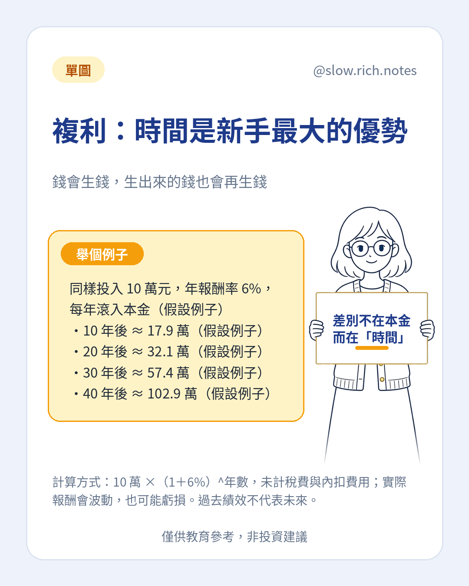

複利說起來很樸素：錢生出來的錢，若沒有領走，也留在裡面繼續生。有人說愛因斯坦稱它為世界第八大奇蹟，出處我們沒有查證，就不把它當成名言。力量本身可以用算術看一看。
假設例子：一次放入 10 萬元，每年報酬 6%，中間都不領出，賺到的都滾回本金。大約 10 年後是 17.9 萬，20 年後 32.1 萬，30 年後 57.4 萬，40 年後 102.9 萬。從第二個 20 年多出來的那一大段，主要不是因為一開始的本金比較大，而是時間讓後來的增值也加入本金。
算法是 10 萬乘上（1 加 6%）的年數次方，沒有計入稅、手續費和內扣費用。真實世界不會每年都剛好 6%。有的年會跌，有的年漲得更多，整段時間下來也可能是虧的。紙上的複利，不代表未來會照表發生。
新手容易覺得自己本金太少，所以先不要開始。本金會影響起點，可是一直拖著不開始，時間這一段就先沒了。開始之前仍要有緊急預備金，並確認這筆錢中間不會被生活抽走。複利需要錢留在場上，才有機會工作。
上面這個例子是一筆錢放著不動。若你是每個月再投入一小筆，路徑會不一樣，但「留下時間」這件事仍然是核心。中間若因為生活把錢全部領出，複利就先中斷，之後要重新累積。所以它不是叫人忍耐到不吃飯，而是先分出暫時用不到的那一份。
想先確認自己能不能開始，可以免費領《投資新手入門清單》。
⚠️ 僅供教育參考，非投資建議。文中若有數字，皆為假設例子，請依自己的狀況調整。投資有風險，請自行評估。